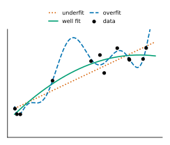

Clive Humby, a British mathematician and data science entrepreneur, originally coined the phrase “data is the new oil” [1], and since then this phrase has been repeated over and over. In 2011, the senior vice-president of Gartner, Peter Sondergaard, took this concept even further [2]:
Information is the oil of the 21st century, and analytics is the combustion engine.
— Peter Sondergaard, 2011
There is much that is right about this statement, and much that is misleading. Data will be enormously important, just as oil is today. With the right data you can make a fortune, just as with oil today. There is a crucial difference, though. Oil is a commodity; data is not. If you own a commodity, the business is straightforward: you sell it at market price, and the more you have the better. With data, it is different: data only has value in combination with a problem. The question is not “How much data do you have?” The question is “What problem do you want to solve with it?” This also means that blindly collecting tons of data and hoping that something amazing will be learned by a machine eventually is generally not a good idea. Finally, there are a few technicalities: the amount of data needed is related to the complexity of the model used, and in some cases we can get away with generating more data or reusing data. Let us take a closer look.
If you want to predict or control something based on data, the data needs to contain the necessary information for it. It sounds almost trivial; nevertheless, many machine learning projects stumble over this requirement. Sometimes it is not obvious that the relevant information is missing from the data.
Say, for example, you have machines that suffer from regular unplanned outages. Luckily, the machines already collect data on all imaginable aspects of the machines' operation: speed, temperature, pressure, maintenance intervals, ambient humidity, etc. It looks like you are in perfect shape to run machine learning. It might still be, however, that all this data is useless in predicting unplanned outages. What if the outages are actually caused by the machine operator being late on the job? No motor temperature or valve pressure can predict that! Make sure to know as much as possible about the quantity you want to predict or the thing you want to classify.
Sometimes it happens that only a fraction of the collected data is relevant. Take, for example, predictive maintenance: imagine you have years of data about a machine for which you would like to detect defects. If the machine is well designed, defects are rare. You might have years of data, but if there have only been three defects in all those years, you find yourself sitting on a pile of data of which only 0.001% is relevant.

Models vary in complexity. One of the simplest models is the linear regression model. It assumes that the prediction (dependent variable / output) is linearly related to the model input (independent variables). To establish a linear relationship, not much data is needed. If the real relationship is not linear, though, but more complex, you are underfitting the data. The linear model is too limited to capture the real relationship between independent and dependent variables. On the other end of the spectrum are deep neural network models: they are incredibly malleable and can capture a vast variety of highly nonlinear relationships. There is no such thing as a free lunch, though. To capture highly nonlinear relationships, a large amount of data is needed. If the model is too complex for the data, you run into a problem called overfitting. The model does not learn the relationship in the data but just memorises the data. Such a model will not generalise, meaning that it will perform poorly on new, previously unseen data. Figure 1 illustrates this trade-off on a simple curve-fitting example.
The art is to find the right model complexity for the available data. The amount of data limits the complexity of the relationships that can be detected in the data. The good news is that there are methods to detect underfitting or overfitting, so machine learning experts can calibrate model complexity. The standard approach is to split the available data into training, validation, and test sets, and watch how performance on unseen data diverges from performance on the training set itself.
To be clear: if there is no data, or only data unrelated to the problem you want to solve, all bets are off. If you have scarce but relevant data, though, there is a chance that you can make more out of it. Here are common tactics to make every bit of data reach its full potential.
We just learned that the amount of data limits the complexity of the relationships that can be detected in the data. But what if we already know something about this relationship? Why let machine learning figure out something that we already know? The idea is to add domain knowledge and use the scarce data only to learn the parts we do not know. There are ways to achieve this:
You might already know the basic mathematical relationship of the problem you want to model. Instead of learning the relationship from scratch, you use the data you have to merely fit the unknown parameters of the model. This is what empirical physicists do: they know the laws of physics, but the exact value of a fundamental constant is unknown. So, they use empirical data to estimate the value of the missing constant, considering the laws of physics as fixed and given.
Another case is when you already have a mathematical model of your problem, but there are influences that your model does not account for. Instead of letting machine learning model the entire relationship, we can use machine learning to predict the discrepancy between your handcrafted model and the actual data. This type of model is called a residual model. To make a prediction, you take the output of your mathematical model and correct it with the output of the residual model.
Even if you do not have a rudimentary model, you still might have an idea what kind of input data might help. This preparation of the input data is called feature engineering. For example: we want to train a model to recognise persons based on image data. We could set up a deep neural network, but that would need a significant amount of training data that we might not have. It is a known fact that certain ratios between facial features are highly indicative of a person's identity. So, instead of learning a model based on raw image data, we could use existing methods to find key features such as the position of the eyes, the mouth, and the nose, and calculate the ratios of their respective distances to each other. These ratios become the new input data for the machine learning model. Early face recognition software did use this principle but was superseded by deep neural networks once the amount of available data became large enough. The principle still stands: In the absence of sufficient data, feature engineering can save us.
Beware of feature over-engineering, though! In domains such as image and text recognition, it turned out that models with handcrafted features were handily outperformed by deep learning applied to un-engineered raw data. Feature engineering prevents machine learning from discovering new features in the raw data that domain experts did not know of. So, as a rule of thumb, if there is an abundance of data, let deep learning do its magic. Invest in feature engineering, on the other hand, if data is scarce.
Problems in the domains of image and language processing share common parts. Machine learning models can reuse them to be more data-efficient. Most image classification models that work on small data sets, for instance, use parts of large publicly available models that were trained with massive amounts of data. These reused parts detect features that are universally relevant in image processing, such as edge and corner detection. When building neural network models for text, the vocabulary must be embedded in a multidimensional space. These so-called word embeddings can be reused for a large variety of different models.
While these techniques regularly enable us to create surprisingly complex models with modest amounts of data, they have their limits: if your computer vision problem is highly domain-specific—for example, tinted microscopy images of blood cells, or astronomical X-ray images—reusing models trained on animals and household objects may not give you that much of an edge. The same is true for word embeddings: a word embedding trained on webpage texts and world literature may not capture the delicate details needed for analysing specific legal texts. Nevertheless, the prospect of doing more with less data always makes it worthwhile to try!
Please note, though, that examples of successful model reuse outside the domains of vision, text, and speech are almost non-existent.
Data augmentation is the art of creating new data from existing data. The key is to find invariants: manipulations of the data which do not change the associated classification or prediction. Take images of cats and dogs, for instance. Shifting the image a little bit, or zooming out or in, does not change the classification. The cat pictures stay cat pictures, and the dog pictures stay dog pictures. So, new data can be created by applying these transformations to existing data, as illustrated in Figure 2.
Data augmentation has its limits, though. No matter how much variation you add by shifting or zooming, a picture of a Poodle will not become a picture of a German Shepherd. A model trained on augmented Poodles may have problems recognising a German Shepherd as a dog. There are important variations in the class “dog” that cannot be created by augmentations alone. This is true for classification in general.
Another limit is that while it is often easy to find invariants for image data, it is much harder to find them for other data types. Imagine you have time series of economic indicators and want to predict future copper prices based on them. To which transformations of the economic indicator time series might the future copper price be invariant? If you think you know one, let me know, because I have no idea.
While data is increasingly important in our world and machine learning is dependent on it, data per se has no intrinsic value. Data gains value with respect to a problem that can be solved with it. Your personal data has only value because it can be used to improve targeted advertisement or commit fraud. Your shopping history has only value because it can be used to build recommender systems, and again, improve targeted advertisement. Real-time stock market data has only value because you can use it to improve stock trading decisions. The list goes on and on. All valuable data has a problem associated with it.
If you have data and do not know what to do with it, the question is: What problem could the data solve? If you have a problem but not data to help solve it, it sometimes pays off to be creative: Some data tells more than it would seem at first sight.
Here are a few examples of inferring relations that you would not normally associate with this type of data. How do you know if a business is running well if you have no access to its financial data? How do you know that a government agency is extraordinarily busy? You could analyse satellite images of the parking lot [11]. Or look at how many pizzas are delivered there late at night: in 1990, Domino's franchisee Frank Meeks noticed that deliveries to the CIA and the Pentagon spiked whenever a crisis was brewing—a one-night record of 21 pizzas to the CIA was delivered the night before Iraq invaded Kuwait [12]. Even seemingly unrelated timestamps can be revealing: researchers found that people who repeatedly uploaded geotagged photos to Flickr from the same place at around the same time were, with high probability, socially connected, even after just a handful of such coincidences [13].